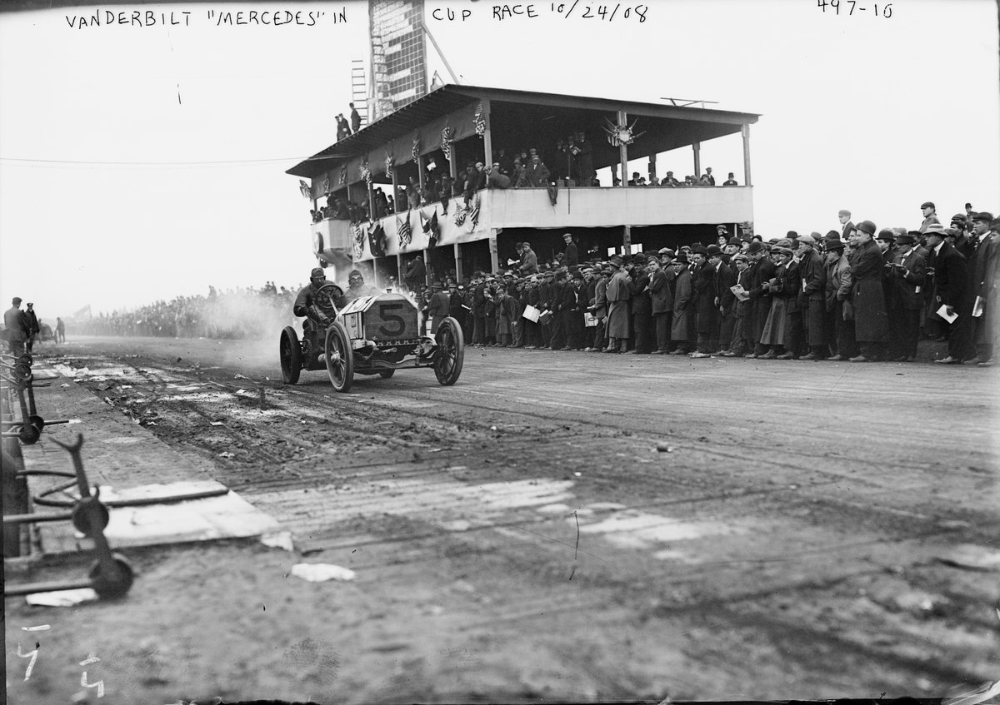
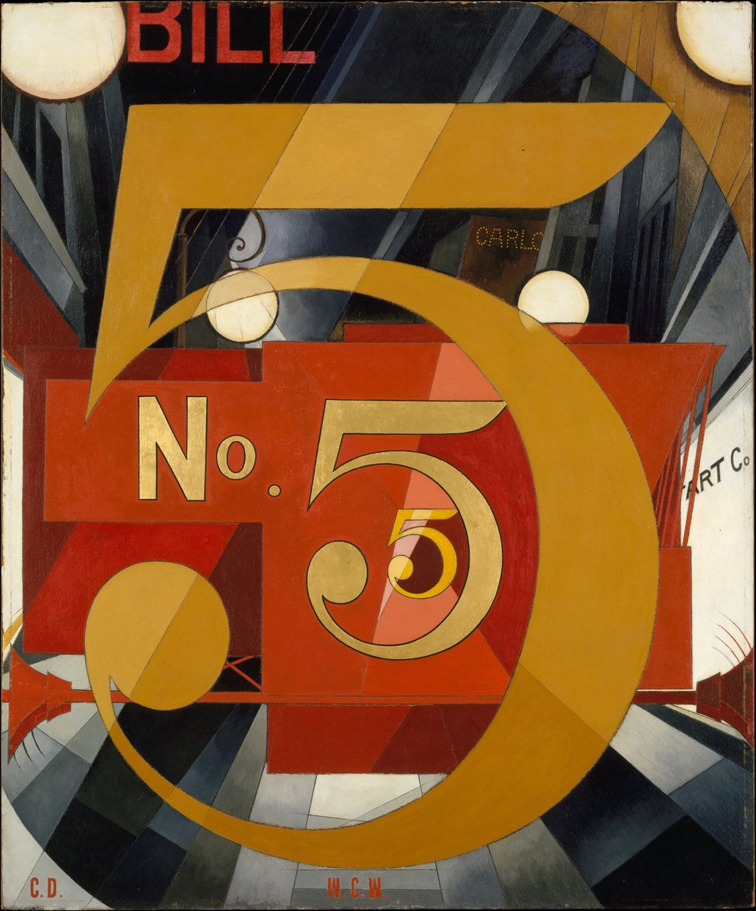

What happens when a letter or a number stops labeling a picture and becomes the picture?
So far you have used type to caption, title, and organize your work. This week you flip that relationship. Instead of text sitting beside an image, text becomes the image, the main shape a viewer's eye lands on first. Your anchor is a single painting built almost entirely around one gold numeral.
👀 PART 1 · LOOK FIRST
Look at the photograph below: a bold, hand-painted numeral whose entire job was to identify one specific vehicle at a glance, even in the middle of real motion and speed. This is the same basic idea behind this week's featured painting, a numeral used as the main compositional shape rather than a caption in the corner.

George Grantham Bain Collection, 1908 Vanderbilt Cup, car no. 5, driver Wilhelm Lüttgen. Library of Congress; no known copyright restrictions. Source: Wikimedia Commons
A real photograph first, not the featured painting. A racing number like this one had one job: to be read instantly, from a distance, in a blur of speed. Demuth's painting, coming up next, gives a gold numeral 5 that same urgency, just built from paint instead of sheet metal.
💭 QUICK CHECK-IN · NO WRONG ANSWER
A number takes over the whole composition like the sketch above. What is the first thing you think it could represent?
📚 PART 2 · WHEN WORDS AND NUMBERS BECOME THE ART
Most of the time, text near an artwork does a supporting job: a title on a museum label, a caption under a photo, a signature in the corner. But artists have also used letters and numbers as the actual subject and structure of a piece, not just information about it. A few general examples, in survey terms:
Medieval manuscript makers sometimes turned the first letter of a page into a large, decorated illuminated initial, so the letter itself became a small painting.
Sign painters and commercial artists have long treated lettering as a craft with its own design rules, choosing shape and weight the way a painter chooses a brushstroke.
In the twentieth century, some American painters put numbers and words at the center of a fine-art painting instead of at its edge. This week's featured artist is one of the clearest early examples of that move.
Later painters kept exploring the same territory. The American artist Jasper Johns, working decades after this week's featured painting, became well known for paintings built entirely around numerals and stenciled words. His work is still under copyright, so it is not shown here, but you can view it at the museums that hold it, including whitney.org and moma.org.
💡 A NOTE ON THIS SURVEY
The examples above are given in general terms to show that text-as-image is a long-running idea, not a single artist's invention. This lesson focuses in detail on one verified painting: Charles Demuth's I Saw the Figure 5 in Gold.
🔍 PART 3 · CHARLES DEMUTH: I SAW THE FIGURE 5 IN GOLD
Charles Demuth (1883 to 1935) was an American painter associated with Precisionism, an American art movement of the 1920s and 1930s known for crisp, geometric depictions of industrial and urban subjects: factories, grain elevators, skyscrapers, and city streets rendered with hard edges and simplified shapes rather than loose brushwork.
In 1928, Demuth painted "I Saw the Figure 5 in Gold," an oil-on-cardboard painting held today by the Metropolitan Museum of Art in New York. The painting was inspired by a poem by his friend, the American poet William Carlos Williams, titled "The Great Figure," which describes a fire truck marked with a gold number 5 rushing through a rainy city at night. Demuth translated that fleeting moment into paint: a large gold numeral 5 dominates the canvas, repeated at a smaller scale in the background, surrounded by fragments of lettering, streetlights, and abstracted city shapes.

Charles Demuth (American, 1883–1935), I Saw the Figure 5 in Gold, 1928. Oil on cardboard. Metropolitan Museum of Art, New York, accession 49.59.1. Public domain (published before 1931; verified against the Met's own Open Access collection data). Source: Metropolitan Museum of Art / Wikimedia Commons
This painting belongs to a small series Demuth called his "poster portraits." Instead of painting a friend's face, Demuth painted a friend's world: objects, initials, and symbols associated with that person, arranged like a poster or sign. "I Saw the Figure 5 in Gold" is a poster portrait of William Carlos Williams, built from the poem's own imagery rather than from Williams's likeness. The words "Bill," "Carlos," and fragments of Williams's name appear worked into the composition alongside the numeral.
⚡ TRY IT · DEMUTH AND TEXT-IN-ART
Read each statement, decide if it is accurate, then check your answer.
Charles Demuth is associated with Precisionism, an American movement known for crisp, geometric depictions of industrial and urban scenes.
"I Saw the Figure 5 in Gold" was inspired by a poem written by which of Demuth's friends?
Demuth called paintings like this one, built from a person's associated objects and symbols instead of their likeness, what?
🎨 TEXT AS A COMPOSITIONAL DEVICE
When a letter or number becomes the main shape in an artwork, it does the same jobs any strong shape does: it can anchor the composition, create scale and contrast against smaller background elements, and carry meaning beyond its literal reading (a number can suggest speed, identity, or memory, not just a quantity). The choice of typeface, size, color, and placement is as deliberate as any brushstroke.
⚠️ WORTH KNOWING · AI AND TEXT-IN-IMAGE TOOLS
Some AI image generators can render text or numbers inside a generated picture from a prompt. They do not know why you are placing a number or word where you are placing it, what it should mean, or how it should relate to the rest of your composition. Those decisions, the ones this lesson is about, are what your project this week asks you to make yourself.
📝 VOCABULARY
Text-as-imageUsing letters, words, or numbers as a central visual and compositional element of an artwork, not just as a label or caption.
PrecisionismAn American art movement of the 1920s-1930s known for crisp, geometric depictions of industrial and urban subjects.
Poster portraitDemuth's term for a small series of paintings that portray a person through symbols and objects tied to them, instead of their likeness.
Illuminated initialA large, decorated first letter on a page, used in medieval manuscripts, where the letter itself becomes a small painting.
CompositionHow the parts of an artwork are arranged.
Public domainWork no longer under copyright protection, which can generally be reproduced freely.
➡️ WHAT YOU'LL DO NEXT (IN CANVAS)
1
Find Your Own Text-in-Art Example · Week 7
Locate one artwork, besides Demuth's, that uses text or numbers as a visual element and record where you found it. Completion grade.
2
Discussion: Reading Demuth's Figure 5 · Week 7
Describe what the numeral does compositionally in Demuth's painting and respond to a classmate.
3
Quiz: Demuth & Text in Art · Week 7
8 questions, auto-graded in Canvas.
4
Project: Text-in-Art Study · Week 7
Research how text functions in a chosen artwork, then build your own Pixlr E piece that makes a number or word the central compositional element. Your graded artwork this week.
💪 THE BIG IDEA
Demuth took a single number from a poem and made it the whole painting, proving that a letter or number can carry as much weight as any other shape an artist chooses. Type does not have to sit quietly at the edge of your work. This week you decide what a number or word can mean when you put it at the center of your own composition.
Optima Academy Online · DIGITAL ART IMAGING · Quarter 3 · Student Lesson Page


.jpg){kind=link}